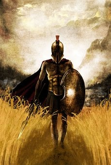
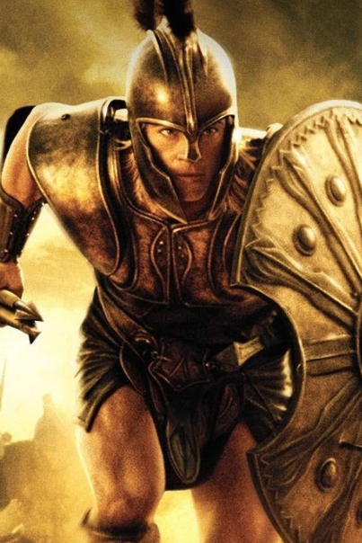
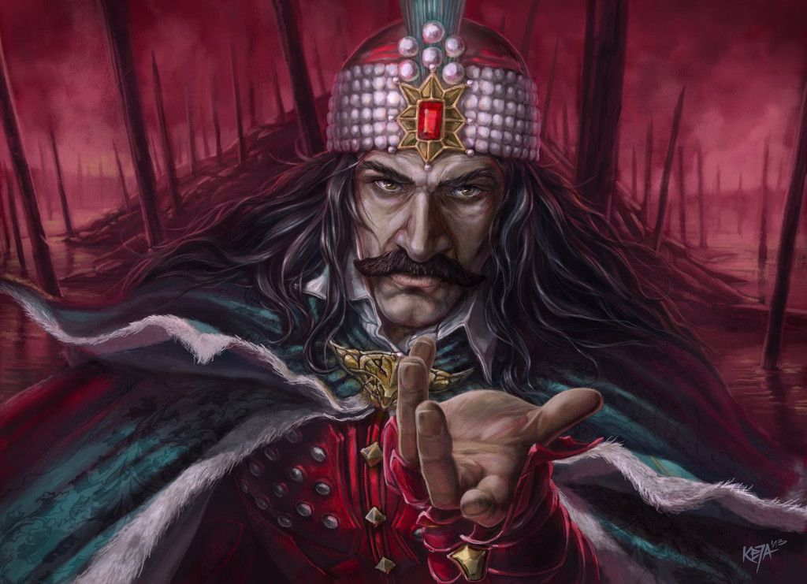
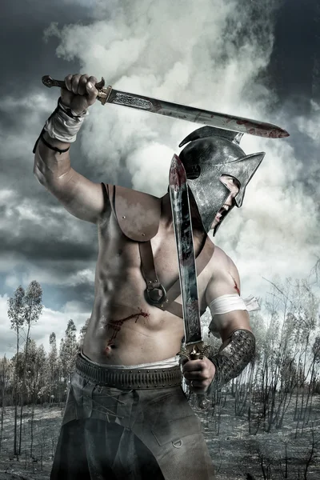
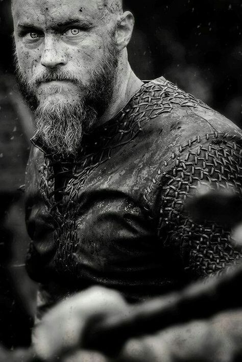

Rei e general de Esparta Leônidas
Rei e general de Esparta Leônidas ocupou o trono de Esparta entre 491 a.C. e 480 a.C., como sucessor de seu irmão Cleômenas 1º, cuja filha se tornou sua esposa em 488 a.C.. Uma de suas ações mais importantes se deu por ocasião da invasão da Grécia pelos persas, em 481 a.C. A famosa batalha de Termópilas que serviu de inspiração para a história em quadrinhos e o filme "Os 300 de Esparta" foi uma das várias travadas entre gregos e persas. Diante da marcha dos persas com o objetivo de invadir a Grécia, o rei de Esparta Leônidas colocou 300 espartanos para enfrentar a ofensiva na estreita passagem das Termópilas. Leônidas morreu depois que os arqueiros persas cumpriram a ordem de "escurecer o céu com flechas".
Aquiles Herói Grego
Aquiles, na mitologia grega, foi um herói da Grécia, um dos participantes da Guerra de Troia e o protagonista e maior guerreiro da Ilíada, de Homero. Aquiles tem ainda a característica de ser loiro e o mais belo dos heróis reunidos contra Troia, assim como o melhor entre eles se distinguiu na guerra de Tróia, celebrado nos versos de Homero. Conta a lenda que o único ponto vulnerável no seu corpo era o calcanhar e que morreu vítima de uma flecha envenenada que lhe atingiu exatamente o calcanhar.
O Famoso Drácula
Vlad nasceu em 7 de dezembro de 1431 na Transilvânia. Era o segundo filho legítimo de Vlad II, que era o filho ilegítimo de Mircea I. Ele ganhou a alcunha de Dracul por sua entrada na Ordem do Dragão, uma fraternidade militar fundada por Sigismundo, monarca do Sacro Império Romano. Honrado pelo convite, Vlad II decidiu adotar o título de Dracul, o Dragão. Isso porque “Drac” é dragão em romeno; e “ul”, é o mesmo que “o”. Portanto, ao alcançar a fase adulta, Vlad III também entrou para a ordem e se tornou o “Drácula”. Ou seja, o filho do Dragão.
Spartacus
Spartacus foi um gladiador de origem trácia, viveu na República romana e foi o líder da mais célebre revolta de escravos na Roma Antiga, conhecida como "Terceira Guerra Servil", "Guerra dos Escravos" ou "Guerra dos Gladiadores" Após abandonar a vida militar, organizou um grupo de ladrões que realizava assaltos. Preso em 73 a.C., foi vendido como escravo para um treinador de gladiadores da região da Cápua, porção sul da Península Itálica. ... A notícia logo incitou outros escravos a se juntarem ao bando de Spartacus. Por fim todos os que o rodeavam fugiram, e ele permaneceu firme em seu posto, completamente cercado, lutando valentemente, sendo retalhado. Após a batalha, o corpo de Spartacus nunca foi descoberto. Sem sepultura, assim ficou o seu corpo no campo de batalha.
O Vinking Ragnar
Vikings é baseado em um lendário herói, rei e guerreiro do povo nórdico. Até hoje, Ragnar é lembrado como um dos Vikings mais famosos de todos os tempos. Um herói lendário (ou vários) Ragnar Lothbrok (ou Lodbrok, título que significa "Calças peludas") foi um rei viking famoso por ter atacado diversas vezes a Inglaterra e o Reino Franco no século IX. Sua vida e feitos são contados em vários poemas e lendas nórdicos.